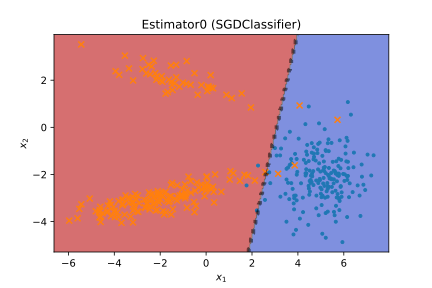
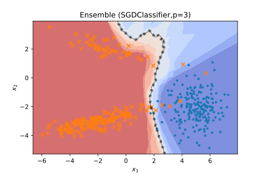
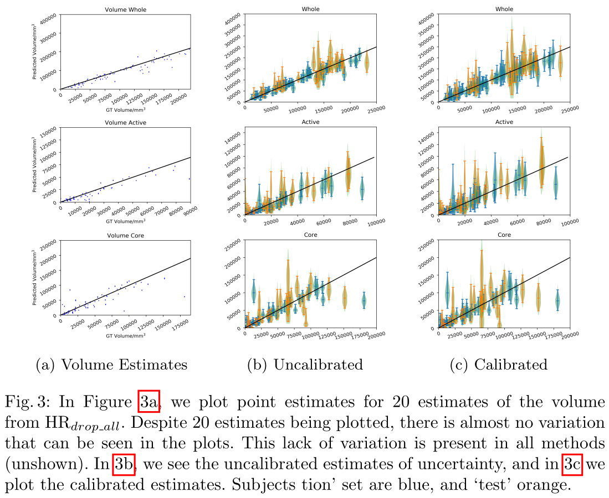

@///////// TITLE
@: .title-slide /no-status
# // comment
- {{ nd.vars.author }} − {{ nd.vars['author-from'] }}
- {{ nd.vars.venue }}
- {{ nd.vars.date }}
(press to play)
(press to show all slide)
{style=font-size:65%}
@///////// END
@: .title-slide .centered /no-status
@for-copy
@: #endslide
# *// comment* {.centered}
- {{ nd.vars.author }} − {{ nd.vars['author-from'] }}
- {{ nd.vars.venue }}
- {{ nd.vars.date }}
- {.no-bullet}
- {.no-bullet}
.hoverzoom2 { transition: transform 500ms; transform-origin: bottom right; }
.hoverzoom2:hover { transform: scale(2,2); }
THANK YOU!
{.centered}
{{$o.MORE}}
{.centered}
@////////////////////////////////////////
@////////////////////////////////////////
@////////////////////////////////////////
@/////////////////////// overview/plan //
@////////////////////////////////////////
@sticky-add: @:.libyli
@eval-header: part = 0
@for-copy
@: #global .no-libyli .overview
## (Overview)
1. Why we need to quantify uncertainty?
1. Some sources of uncertainty
1. Statistical machine learning approaches \
for general uncertainty modeling
1. Deep Learning practices for uncertainty modeling
1. Bayesian Neural Networks
1. Bayesian view of machine learning
1. Variational inference
1. Variational Dropout
1. Applications and Openings
@////////////////////////////////////////
@////////// Motivation
@eval-header: return highlightLi(part+=1)
# @copy: global
## Why we need uncertainty quantification?
.illus:first-of-type { margin-top: -100px;}
.illus { width: 180px; float: right; clear: both; margin: .2em;}
.uillus { margin-left: 200px; height: 100px;}
- Automated systems raise questions from experts
- Can I trust the predictions? // accuracy, and more generally everything
- Is the system confident in its prediction?
- How was the decision taken? {.not-covered}
- Good decision making is based on some assessment of uncertainties
- Medical diagnosis
- Asymmetric costs situations
- Benefit/risk evaluation
- Multi-factorial decisions
- Self driving cars
- ...
@////////////////////////////////////////
@////////// Sources of uncertainty
@eval-header: return highlightLi(part+=1)
# @copy: global
## What is uncertainty?
> Uncertainty refers to epistemic situations involving **imperfect or unknown information**.
> \
> \
> It applies to predictions of **future events**, to **physical measurements** that are already made, or to the **unknown**. \
> Uncertainty arises in partially observable and/or stochastic environments, as well as due to **ignorance, indolence, or both**. \
> \
> It arises in any number of fields, including insurance, philosophy, physics, **statistics**, economics, finance, psychology, sociology, **engineering**, metrology, meteorology, ecology and information science.
> wikipedia
// machine learning is engineering of statistical software
## Sources of Uncertainty in Models
- Traditional ideal (deterministic) models, like rules in physics
- e.g., $x_{t+1} = f(x_{t})$ (e.g., dynamics, $f$ includes gravity etc)
- e.g., $Y = f(X)$ (e.g., ideal gas law, $PV = nRT$)
- Sources of uncertainty around statistical models? {.libyli}
- Examples
- stochastic (non-deterministic) environment // e.g., when flipping a coin), not deterministic {.will-alea}
- "sensors": partial observations, noisy observations // or flipping a coin also* (e.g., an image gives the position of a car but no speed) {.will-alea}
- limited data (e.g., estimate the fairness of a dice from only 2 throws) // epistemic {.will-epi}
- modeling: incomplete/partial/imprecise (or even wrong) model *// (e.g., friction prop. to velocity)* {.will-epi}
- imprecision in the model (e.g., value of $\pi$ in $\mathcal{A} = \pi r^2$) {.will-epi}
- more... // do you see more (a way of replacing their suggestions in the boxes, or creating new boxes)
- Usual categories
- Aleatoric (statistical) uncertainty... from things we cannot know {.will-alea}
- Epistemic (systematic) uncertainty... from things we could know {.will-epi}
- @anim: %+alea: .will-alea +
- @anim: %+epi: .will-epi
{.dense}
@:.__slide_8271826
## Uncertainty Types: a simplified view
/* not really local, hence the class */
.__slide_8271826 em { opacity: 0.35; }
- Aleatoric *(statistical)* uncertainty {.alea}
- "true" inherent randomness
- w.r.t. our observables, inputs and "ground truth" outputs
- no amount of data can remove this uncertainty
- Epistemic *(systematic)* uncertainty {.epi}
- not enough "training" data
- wrong/simplified modeling assumptions
- **Today's challenge**\
Learn a model under **aleatoric**{.alea} and **epsitemic**{.epi} uncertainty {.challenge}
- NB: a task we won't cover in this talk, Uncertainty Propagation {.dense .not-covered}
- given an actual model (manually specified / already learned)
- propagate the uncertainty from a given input to the output prediction
@:.helped-svg
## Uncertainty in Machine Learning: regression (1D "input", single "output")
- Aleatoric/statistical = "true" inherent randomness
- Epistemic/systematic = missing data, bad model
@:.helped-svg
## Uncertainty in Machine Learning: classification (2D "input", binary)
- Aleatoric/statistical = "true" inherent randomness
- Epistemic/systematic = missing data, bad model
@:.helped-svg
## Toy 2D-Dataset: *Aleatoric*{.alea} Uncertainty
- Aleatoric/statistical = "true" inherent randomness
- Epistemic/systematic = missing data, bad model
 @:.helped-svg
## Toy 2D-Dataset: *Epistemic*{.epi} Uncertainty
- Aleatoric/statistical = "true" inherent randomness
- Epistemic/systematic = missing data, bad model
## A Quick Visual Summary on Uncertainty
- Aleatoric/statistical = "true" inherent randomness
- Epistemic/systematic = missing data, bad model
- *Aleatoric uncertainty*{.alea} in regions of class overlap
- *Epistemic uncertainty*{.epi} when OOD (out of distribution)
@:.helped-svg
## Toy 2D-Dataset: *Epistemic*{.epi} Uncertainty
- Aleatoric/statistical = "true" inherent randomness
- Epistemic/systematic = missing data, bad model
## A Quick Visual Summary on Uncertainty
- Aleatoric/statistical = "true" inherent randomness
- Epistemic/systematic = missing data, bad model
- *Aleatoric uncertainty*{.alea} in regions of class overlap
- *Epistemic uncertainty*{.epi} when OOD (out of distribution)
- encompasses many different situations
- NB: no perfect specification of what to do for OOD
- *Epistemic uncertainty*{.epi} in regions of low data
- especially with class imbalance, etc.
- possibly combined with aleatoric
{.denser style="clear:both; float:right; width: 380px; margin-left: -1.5em;"}
## How Neural Nets do Classification? *(reminder) (example with 3 classes)*{.dense}
- @anim: NOPE | #softmax | #output | #logits
- $o = softmax(l) \Leftrightarrow \forall i, o_i = \frac{\exp(l_i)}{\sum_j{\exp(l_j)}}$ {style="margin-top: -1em;"}
## A Probability for each class?
- A probability vector is better than just predicting a class
- parallel with a regression setting
- instead of predicting a single output value
- predict a distribution (e.g., a mean and variance)
- But... ambiguity: *aleatoric*{.alea} vs *epistemic*{.epi}
- what is *actually uncertain*{.alea} *(in the current representation space)*{.dense}
- what the model *doesn't know*{.epi}
- A probability vector cannot convey all information {.challenge}
(but a good probability vector can be enough for some decision making)
{.denser .centered style="margin-top: -1em"}
## 50% dog, 50% plane?
- *aleatoric*{.alea} vs *epistemic*{.epi}
- Example setup
- a model trained to distinguish 2 classes, dog vs plane
- on a new image, the network predicts 50%/50%
- two possible situations
Case 1 !
{.halfwidth .centered .will-alea .step}
Case 2 !
{.halfwidth .centered .will-epi .step style="vertical-align: top"}
@anim: %+alea: .will-alea
@anim: %+epi: .will-epi +
## ReLU Networks are Overconfident (Hein et al., CVPR2019)
{style="position: absolute; top: 10px; right: 0;"}
- Over-confident predictions
- A deep model doesn't know *what it doesn't know*{.epi} {.challenge}
@anim: .moons
- NB: it is also over-confident in *regions of inherent uncertainty*{.alea} {.dense}
( Image from the companion-webpage https://github.com/max-andr/relu_networks_overconfident of:
*Why ReLU networks yield high-confidence predictions far away from the training data and how to mitigate the problem*{.dense}) {.denser .centered}
@////////////////////////////////////////
@////////// ML approaches
@eval-header: return highlightLi(part+=1)
# @copy: global
@//NOT SURE Proper Scoring Rules
@//- // points, with overlap, logistic like,
## (Re)Calibrating a Trained Model $f$
- Goal: properly *quantifying aleatoric uncertainty*{.alea}
- Calibration = for every $x$, make the two following match,
- the predicted output probably $f(x)$ from the model
- and the actual class probability position $p(y|x)$
- ⇒ "expected calibration error"
- need binning (or density estimation) for estimation
{.dense}
- Possible solutions
- re-fit/tune the likelihood/last layer (logistic, Dirichlet, ...)
- e.g., fine tune a softmax temperature {.libyli}
- {.pen .no-bullet}
- $o = softmax_t(l) \Leftrightarrow \forall i, o_i = \frac{\exp(l_i /t)}{\sum_j{\exp(l_j/t)}}$
- $t \rightarrow{} \infty$
⇒ $exp(.) \rightarrow{} 1$
⇒ $o \rightarrow{} uniform()$
- $t \rightarrow{} 0$ ⇒ $softmax \rightarrow{} max$
{.dense}
## Dataset Shift, Domain Adaptation, Transfer Learning *(not today's focus)*{.dense}
- Dataset shift
- the "target" set is different from the training set
- out of distribution situation
- *.*{.pen}
- Solution
- Unsupervised domain adaptation (UDA)
- use unlabeled target data to adapt
- Usual approach
- reduce the discrepancy
between source and target datasets
- a natural fit for the Optimal Transport theory
- or, tune the classifier to become certain on data points
- draw same dataset, with learned classifier
- draw target dataset with an offset
- show that classifier fails
- say UDA is about adapting the classifier or mapping the data
- mention optimal transport
- also more generally transfer learning, possible different weights or different costs -> can include recalibration here, i.e. re-learning a temperature (need to explain what it is... replacing/recalibrating the softmax... might also need to tune a per class pre-softmax bias?)
@////////////////////
## Ensemble methods
- General principle
- learn several models
- "average" their predictions // can do better, e.g. learning weights in boosting
- Typical Approach: Bagging (*bootstrap aggregating*)
- Sample several dataset, with replacement (bootstrap) // TODO DRAW, use it as the canonical example
- Average model predictions
- Random Forests
- maybe the most know bagging model
- ensemble of decision trees
- additionally use "feature bagging" // use a subset of features each time
- NB on boosting (e.g., AdaBoost) (not a simple average) // to be sure there is no confusion and to say that it learns the weights? {.dense .not-covered}
- use just-better-than-random models
- iteratively train with re-weighted datasets
- learn the weights of the models
## Logistic Regressor Bagging Example
@anim: .last
## Support Vector Machines (SVM) Bagging Example

@anim: .last
## SVM Bagging Example with polynomial features (kernel) // deg3

@anim: .last
## Multi-Layer Perceptron (MLP) Bagging Example // [100, 50, 20]
@anim: .last
## Very-Deep MLP Bagging Example // [10]*10
@anim: .last
## Summary on bagging
- Bagging nicely handles quantifying *aleatoric uncertainty*{.alea} {.challenge}
- It works even with overconfident base models
- The sampling creates the necessary noise in *boundary regions*{.alea}
- The model family controls Bagging's *Out of Distribution behavior*{.epi} {.challenge}
- Simple models have low OOD variety ⇒ 100% over-confidence
- Complex/varied models/features better assess *epistemic uncertainty*{.epi}
- However, still a major OOD over-confidence *(like most discriminative models)*{.dense}
{.dense}
@: .slide_75663798
## Zooming out to see Out Of Distribution Over-confidence
.slide_75663798 .s3 {height: 150px;}
- Purely-discriminative models fail at OOD
- We will ignore this issue for some time
- Some solutions
- Use Gaussian Processes
- Combine with one-class / density est.
- Force doubt on generated OOD samples
@anim: .last | .solutions
@////////////////////////////////////////
@////////// Deep uncertainty (restart, dropout, minibatch, etc)
@eval-header: return highlightLi(part+=1)
# @copy: global
## Learning Ensembles of Deep Models
- Re-seeding for stochastic methods
- works very well in practice
- resource intensive (mem., process)
- some variations/optimizations
- snapshot + cyclic learning rate
- Different families of models
- different hyper-parameters
- different architectures
@: .slide_66893590 .dense
## Stochastic Learning as Model Ensembling
.slide_66893590 svg {box-sizing: border-box; }
.slide_66893590 svg {box-shadow: 0 0 2px black;transform: scale(.95, .95); padding: 0.5vh;}
- Dropout: simultaneously training "$2^N$ models" (with shared parameters)
- randomly set weights or activations to 0 *(for every SGD sample)*{.dense}
- NB: often, "weight scaling rule" at test time -> very bad, no uncertainty
- NB: dropout should be applied at test time (costly)
- Other sources of stochasticity and ensembling
- (mini-)Batch normalization // an input is treated differently based on the others that were drawn to make the minibatch
- Stochastic (minibatch) Gradient Descent // form of bagging? simulating different training set
## Diverse vs Local Ensembling
- Re-seeding, Dropout, ...
⇒ diverse ensemble
- Mode fitting (local diversity)
1. learn a single model
1. estimate the local loss landscape
1. create several perturbations of the model
1. use all the models as an ensemble
- Bayesian Neural Networks (BNN)
- "dense" ensemble // more detail after
- can be both local or diverse
@////////////////////////////////////////
@////////// BNN
@eval-header: part+=1 ; subpart = -1
@eval-header: return highlightLi(part, subpart+=1)
# @copy: global
@////////////////////////////////////////
@////////// BNN: Bayesian view
@eval-header: return highlightLi(part, subpart+=1)
# @copy: global
## The two rules in probabilities and Bayes'
 - "Bayesianism"
- Everything as random variables
- Use (conditional) probabilities ... a lot // A generalization of traditional logic
- .{.empty}
- Two probability rules
- .{.empty}
- Product rule:
$P(A, B) = P(A|B) ~ P(B)$ = $P(B|A) ~ P(A)$
{.dense}
- .{.empty}
- Marginalization, Sum rule:
$P(B) = \sum_A P(A,B) \triangleq \sum_a P(A=a,B)$
{.dense}
- @anim: .floatright +
- And in the Baye's rule bind them *// essentially the product rule*
- .{.empty}
- $P(A|B) = \frac{P(B|A) ~ P(A)}{P(B)} = \frac{P(B|A) ~ P(A)}{\displaystyle \sum_A P(B|A) ~ P(A)}$
- .{.empty .denser}
- NB: Exactly the same holds with probability densities (for continuous random variable) {.denser}
## Principle of Bayesian "Learning"
- Use probabilities to
- represent non-deterministic laws
- represent uncertainty (*aleatoric*{.alea} and *epistemic*{.epi})
- reason about uncertainty (do learning, inference)
{.dense}
- Considering
- some parameters (e.g., weights of the network, $W$)
- some dataset (e.g., both training inputs and labels, $X$)
- We have *﹏*{.pen}
- $P(W|X) = \frac{P(X|W) ~ P(W)}{P(X)} \propto P(X|W) ~ P(W)$
- More verbosely
- $P_{posterior}(weights | trainset) = \frac{P_{likelihood}(trainset|weights) ~ P_{prior}(weights)}{P_{constant}(trainset)}$
{.denser .no-bullet .challenge}
- Posterior probability
- probability distribution of the parameters given the training set
- i.e. what we know about the parameters after seeing the training set
{.dense}
## Principle of Bayesian Neural Networks
@anim: .weight | .bump | #small-bumps
- Typical BNN: have a 1D Normal distribution on each weight
- 1 mean and 1 variance per weight
- 1 billion weights ⇒ 2 billions parameters
{style="margin-top: -.2em;" }
@////////// BNN: VI
@eval-header: return highlightLi(part, subpart+=1)
# @copy: global
## Training a Bayesian Neural Network
- Bayesian "learning" {.libyli}
- Goal: finding the
- "Bayesianism"
- Everything as random variables
- Use (conditional) probabilities ... a lot // A generalization of traditional logic
- .{.empty}
- Two probability rules
- .{.empty}
- Product rule:
$P(A, B) = P(A|B) ~ P(B)$ = $P(B|A) ~ P(A)$
{.dense}
- .{.empty}
- Marginalization, Sum rule:
$P(B) = \sum_A P(A,B) \triangleq \sum_a P(A=a,B)$
{.dense}
- @anim: .floatright +
- And in the Baye's rule bind them *// essentially the product rule*
- .{.empty}
- $P(A|B) = \frac{P(B|A) ~ P(A)}{P(B)} = \frac{P(B|A) ~ P(A)}{\displaystyle \sum_A P(B|A) ~ P(A)}$
- .{.empty .denser}
- NB: Exactly the same holds with probability densities (for continuous random variable) {.denser}
## Principle of Bayesian "Learning"
- Use probabilities to
- represent non-deterministic laws
- represent uncertainty (*aleatoric*{.alea} and *epistemic*{.epi})
- reason about uncertainty (do learning, inference)
{.dense}
- Considering
- some parameters (e.g., weights of the network, $W$)
- some dataset (e.g., both training inputs and labels, $X$)
- We have *﹏*{.pen}
- $P(W|X) = \frac{P(X|W) ~ P(W)}{P(X)} \propto P(X|W) ~ P(W)$
- More verbosely
- $P_{posterior}(weights | trainset) = \frac{P_{likelihood}(trainset|weights) ~ P_{prior}(weights)}{P_{constant}(trainset)}$
{.denser .no-bullet .challenge}
- Posterior probability
- probability distribution of the parameters given the training set
- i.e. what we know about the parameters after seeing the training set
{.dense}
## Principle of Bayesian Neural Networks
@anim: .weight | .bump | #small-bumps
- Typical BNN: have a 1D Normal distribution on each weight
- 1 mean and 1 variance per weight
- 1 billion weights ⇒ 2 billions parameters
{style="margin-top: -.2em;" }
@////////// BNN: VI
@eval-header: return highlightLi(part, subpart+=1)
# @copy: global
## Training a Bayesian Neural Network
- Bayesian "learning" {.libyli}
- Goal: finding the
*posterior distribution on the parameters*{.it}
- $P_{posterior}(weights | trainset)$
$= \frac{P_{likelihood}(trainset|weights) ~ P_{prior}(weights)}{P_{constant}(trainset)}$
- Prediction for a new input $x$
$f_{posterior}(x) = \int f_{weights}(x) \cdot P_{posterior}(weights|trainset)$
- Variational Inference (VI) *(or Stochastic Gradient Variational Bayes, SGVB)*{.dense .light} {.libyli}
- Parameterize *$P_{posterior}(weights | trainset)$*{.dense},
e.g., a *$\cal{Normal}$*{.dense} per weight ⇒ 1 billion means and variances
- Do stochastic gradient descent (SGD)
- Sample a weight at every forward pass
i.e., approximate the $\int \cdots ~ ~$ by a single sample
{.dense}
@/////////// TODO prévenir que pas bcp de résultats, plutôt les concepts?
## Variational Inference: BNNs vs VAE
- Compared to Variational Autoencoders (VAE) {.libyli}
- Also use the "reparameterization trick"
- change $w \sim \cal{N}(μ, σ^2)$ to $ε \sim \cal{N}(0, 1) ~;~ w = μ + ε . σ$
- allow the gradient to "flow" to $μ$ and $σ$
*(VAE: allow the gradient to flow to the encoder)*{.light}
- Model distribution on millions of parameters
*(VAE: distribution on latent variables, only a few, but for each data point)*{.light}
- No per-data (latent) variables ⇒ no need for amortization
{.dense}
@////////// BNN: Variational Dropout
@eval-header: return highlightLi(part, subpart+=1)
# @copy: global
## Dropout and Bayesian Neural Networks
- Traditional (weight) dropout
- for each weight, "set" it to 0 with a probability $1-p$
- at test time, multiply weights by $p$ (weight scaling rule)
{.dense}
- Interpretation as a (fixed) distribution
- $w_i \sim \cal{Mixture}_p(0, v_i)$, or
$ε_i \sim Bernoulli(p) ~;~ w_i = ε_i \cdot v_i$ (reparameterized)
- Bayesian implication: apply dropout at test time {.step .libyli}
- (sometimes called "monte carlo dropout") {.no-bullet}
- $f_{posterior}(x) = \int f_{w}(x) \cdot P_{posterior}(w|trainset)$
- $f_{posterior}(x) = \mathbb{E}\_{w\sim P_{posterior}(w|trainset)} \left\[ f_{w}(x)\right\]$
- $f_{posterior}(x) \approx \frac{1}{D} \sum_{j=1}^D f_{w^j}(x)$ with $w^j \sim P_{posterior}(w|trainset)$
- $f_{posterior}(x) \approx \frac{1}{D} \sum f_{v^j\cdot ε^j}(x)$ with $ε^j_i \sim Bernoulli(p)$
{.dense}
@///// TODO OTHER DROPOUTS (e.g., normal noise, structured sparsity?)
## Bayesian Treatment of Dropout
- Bayesian approach, reminder: everything is a random variable
- Treat $p$ as a random variable (during "training")
- first, how many $p$ do we want to use?
- a single $p$ for the whole network
- **a $p$ per layer**
- a $p$ per weight
- learn the posterior on the parameters $θ$, including $p$ {.step}
- $θ = \\{ W, p \\} $
- $P(θ|trainset) \propto P_{likelihood}(trainset|θ) \cdot P_{prior}(θ)$
- ⇒ need a prior... that acts as a natural regularization
- non trivial optimization *// proportional can be costly, unless conjugate prior*
{.step}
- A variety of dropout: Bernoulli, Gaussian (multiplicative) dropout, sparsifying prior, ...
(e.g. Learnable Bernoulli Dropout for Bayesian Deep Learning) {.light .dense .centered}
## Bayesian Neural Networks (BNNs): Summary
- Bayesian treatment of neural networks
- consider each weight as a random variable
- formulate a prior on the weights
- observe some (training) data, and given that...
- ... infer the (posterior) knowledge on these weights
- use this knowledge for prediction
- .{.empty}
- Several flavors, including
- Dropouts
- Bernouilli or gaussian
- learnable dropout parameters // down to each weight
- using prior to encourage network sparsity
- *$\cal{Normal}$*{.dense} modeling of each weight
- .{.empty}
- Learning, inference, testing
- train by gradient descent (SGD) on the "variational" parameters // usually
- use sampling at test time to produce several predictions
{.dense}
@////////////////////////////////////////
@// Going further
@eval-header: return highlightLi(part+=1)
# @copy: global
@: no-libyli .paper-with-image .two-lines
## Estimating Uncertainty and Interpretability in Deep Learning for Coronavirus (COVID-19) Detection
- (Biraja Ghoshal, Allan Tucker)
- dropweight on a BCNN
- improve classification
- good quantification
- human/machine combination
@: .no-libyli .paper-with-image .two-lines
## Towards safe deep learning: accurately quantifying biomarker uncertainty in neural network predictions
- (Zach Eaton-Rosen, Felix Bragman, Sotirios Bisdas, Sebastien Ourselin, M. Jorge Cardoso)
{style="max-width:300px"}
@: .no-libyli .paper-with-image
## ... (cont)

@: .no-libyli .paper-with-image .two-lines
## Propagating uncertainty across cascaded medical imaging tasks for improved deep learning inference
- Raghav Mehta, Thomas Christinck, Tanya Nair, Paul Lemaitre, Douglas L. Arnold, Tal Arbel
{style="max-width:300px"}
## Gaussian processes (GP)
(Avoiding pathologies in very deep networks, Duvenaud et al.)
- GP = Infinitely-wide BNN
- Well formalized
- closed forms
- lot of works around scaling
- @anim: .simple +
- Allows to include prior learning
- Probabilistic, can be combined "easily"
- @anim: .deep +
- Deep GP avoid too much kernel choice
{.dense}
## Going beyond probabilities?
- Probabilities are a way of represent belief
- It might be necessary to also represent confidence
- Some possible directions
- Imprecise Probabilities
- Dempster–Shafer Theory (DST)
- theory of belief functions
- evidence theory
## Evidential Deep Learning
- Principle
- *instead of:*{.denser} predicting the parameters of an *(aleatoric)*{.alea .dense} distribution
- *do:*{.denser} predict a distribution over these parameters
- A way of learning/representing *epistemic*{.epi} uncertainty on *aleatoric*{.alea} uncertainty {.dense}
- Comments {.comment}
- Related to Dempster–Shafer Theory (DST)
- Related to hierarchical Bayesian models, but only on the output
- BNN are different as they learn a distribution on weights (or an ensemble)
(e.g., Deep Evidential Regression (above))
(e.g., Evidential Deep Learning to Quantify Classification Uncertainty) {.light .dense .centered}
@// Pick from (and even give the link)
@// https://github.com/JunMa11/MedUncertainty
@off
## NOPE
@eval-header: $o.MORE = '...'
# @copy: endslide
## Attribution
@: .denser
## References and pointers
- Wikipedia articles
- Bayesian Probabilities
- Imprecise Probabilities
- Dempster–Shafer Theory (DST)
- Proper Scoring Rules (and calibration)
- Some (limited) pointers to research articles
- Unclassified
- The need for uncertainty quantification in machine-assisted medical decision making
- On calibration
- Well-calibrated regression uncertainty in medical imaging with deep learning
- About dropout
- Variational dropout and the local reparameterization trick
- Variational dropout sparsifies deep neural networks
- Variational Gaussian dropout is not Bayesian
- Learnable Bernoulli dropout for Bayesian deep learning
- Evidential deep learning
- Evidential Deep Learning to Quantify Classification Uncertainty .
- Deep Evidential Regression .
- Some online references
- Susan Holmes on Bayesian statistics
- NeurIPS lecture on evidential deep learning
@////////////////////////////////////////
@// closing, no highlight
@eval-header: return highlightLi(part+=1)
# @copy: global
@eval-header: $o.MORE = 'Questions?'
# @copy: endslide
@/////# END
@//// TODO add supplementary slide after recording
@// PGM VI
@// PGM AE?
@// log proba and log prior gives regularization